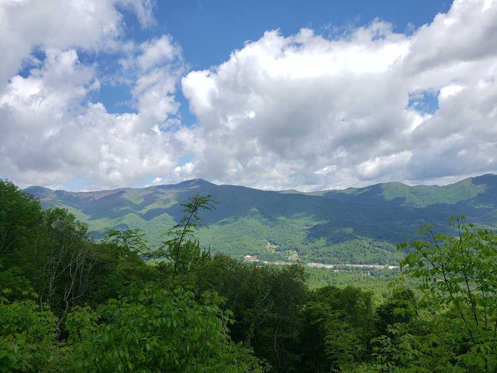
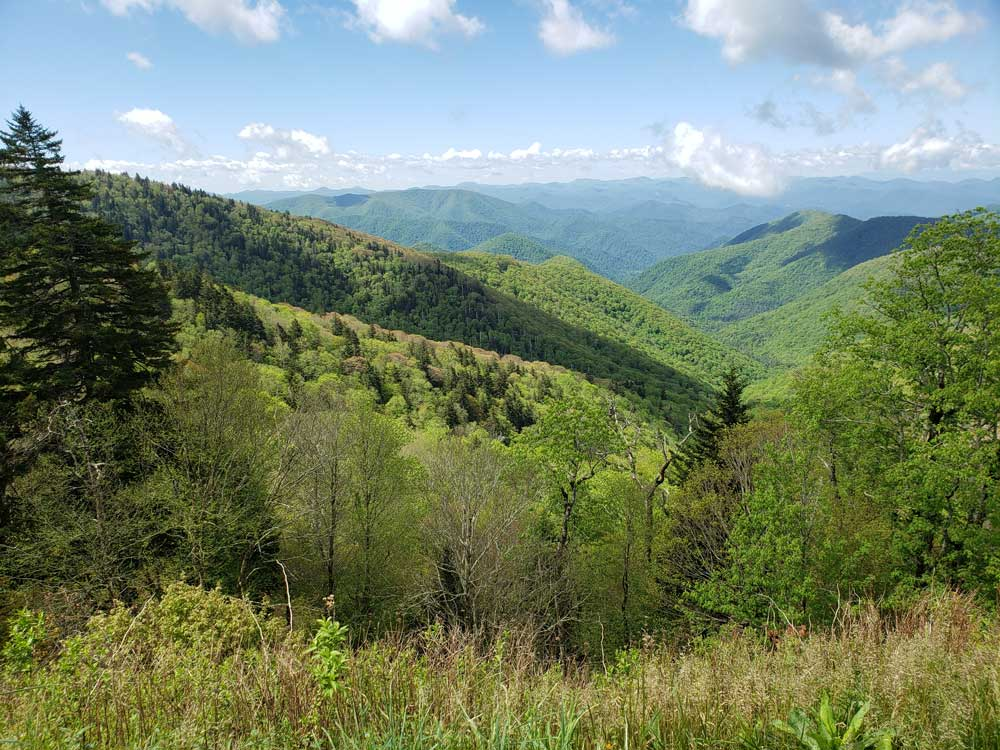

National Parkway and All-American Road, noted for its scenic beauty, is America's longest linear park, running 469 miles (755 km) through 29 Virginia and North Carolina counties, linking Shenandoah National Park to Great Smoky Mountains National Park
General Information
March to April: 7am to 8pm
May to August: 7am to 10pm
September to October: 7am to 9pm
Closed Christmas Day
How to Get There
Head east on S Pack Square toward S Market St. Turn left onto S Market St. Turn right onto College St. At the traffic circle, continue straight to stay on College St. Turn left onto NC-694 N/Town Mountain Rd. Turn left onto Blue Ridge Pkwy. Turn left onto NC-128
Overview
The Blue Ridge Parkway is America's longest linear park, a 469-mile scenic drive through Virginia and North Carolina linking Shenandoah National Park to the Great Smoky Mountains and running mostly along the crest of the Blue Ridge Mountains. It is a unit of the National Park System, built over several decades beginning in the 1930s and completed in 1987 with the Linn Cove Viaduct. There is no fee to drive it, and it has been the most-visited unit in the National Park System nearly every year since 1946. Frequent pull-offs and overlooks, no direct interstate interchanges, and a top speed limit of 45 mph make the drive itself the destination rather than a way to get somewhere fast. Mileposts run from 0 at the Virginia end near Waynesboro to 469 at the North Carolina end near Cherokee.
Access
The parkway can be entered at many points where it crosses highways and passes near towns, so visitors can drive a short stretch or the whole route. In North Carolina, popular access points include Asheville in the south, the Blowing Rock and Boone area, and the Cherokee end near the Great Smoky Mountains. In Virginia, the northern end is near Waynesboro, where it connects with Shenandoah National Park's Skyline Drive. Most people travel by car, motorcycle, or bicycle, and cell service and gas stations are limited along the road itself, so fill up in nearby towns before you enter. Mileposts are the standard way to find overlooks, trailheads, and facilities.
Seasons
Spring brings wildflowers and the first greenery to the lower elevations, while the high-elevation rhododendron bloom in the Craggy Gardens area peaks in mid-to-late June. Summer is the busiest season and the best time for cool mountain air, though fog and afternoon thunderstorms are common. Fall is the most popular time of year, as the foliage turns first at high elevations in early October and moves down the mountains over the following weeks, bringing heavy traffic on weekends. The parkway is not maintained in winter, and sections at high elevations and tunnels are often closed from late fall through early spring because of ice and snow. Many visitor centers, campgrounds, and lodges also operate only in the warmer months, so check current conditions before a trip.
Things to Do
Take the Scenic Drive
Drive all or part of the parkway, stopping at the many overlooks for long views over ridges and valleys. The 45 mph speed limit encourages a leisurely pace, and a short section can fill a half day.
Hike Along the Way
Trails of every length start from parkway pull-offs, from short walks to waterfall and summit overlooks such as Linville Falls, Craggy Gardens, and Devil's Courthouse to longer ridge routes. Many sections of the Appalachian Trail and Mountains-to-Sea Trail also cross or follow the parkway.
Visit Craft Centers and Historic Sites
Stops such as the Folk Art Center, Moses H. Cone Memorial Park, and Mabry Mill showcase Appalachian crafts, music, and mountain life.
Camp, Picnic, and Cycle
Parkway campgrounds and picnic areas make it easy to spend a night or an afternoon in the mountains, and the road is popular with cyclists who are prepared for steep grades and light traffic.
Highlights in Virginia
Humpback Rock (Mile 5.8)
A self-guided trail through historic Appalachian farm buildings, with a steeper hike up to a rock outcrop for sweeping valley views.
Peaks of Otter (Mile 84–87)
A trio of mountain peaks with trails and a lodge; a shuttle bus runs to Sharp Top for panoramic views.
Mabry Mill (Mile 176.1)
A picturesque water-powered gristmill and sawmill, with old-time craft demonstrations in summer and fall.
Blue Ridge Music Center (Mile 213)
Concerts and a museum near Galax dedicated to the region's old-time and bluegrass music traditions.
Highlights in North Carolina
Doughton Park (Mile 238.5–244.7)
One of the parkway's largest recreation areas, with miles of hiking trails, a campground, and a lodge.
Moses H. Cone Memorial Park (Mile 292–295)
Flat Top Manor, the former home of textile magnate Moses Cone, now houses the Parkway Craft Center, surrounded by trails.
Linn Cove Viaduct (Mile 304.4)
The parkway's signature engineering feat, curving around the face of Grandfather Mountain; a visitor center and trail run beneath it.
Linville Falls (Mile 316.3)
Trails lead to overlooks of the falls and the dramatic Linville Gorge.
Mount Mitchell State Park (Mile 355.4)
Reached via a short side road (NC 128), this is the highest point east of the Mississippi River.
Craggy Gardens (Mile 363.4–369.6)
Purple rhododendron blankets these highland balds in mid-to-late June.
Folk Art Center & Blue Ridge Parkway Visitor Center (Mile 382–384)
Near Asheville — traditional Appalachian crafts at the Folk Art Center, and parkway history exhibits at the Visitor Center.
Mount Pisgah (Mile 408.6)
Once part of the Biltmore Estate, now home to the Pisgah Inn and trails with views over Pisgah National Forest.
Devil's Courthouse (Mile 422.4)
A rugged, exposed mountaintop rich in Cherokee tradition, with a short but steep trail to the summit.
Waterrock Knob (Mile 451.2)
A visitor center and trail with panoramic views of the Great Smoky Mountains, near the parkway's southern end.
Visitor Centers
The parkway has several visitor centers and contact stations, most of them open seasonally from spring through fall. The Blue Ridge Parkway Visitor Center near Asheville, close to the Folk Art Center, has exhibits on parkway history, along with maps and information on current road conditions. Other stops listed above, including Linn Cove Viaduct, Craggy Gardens, and Waterrock Knob, have visitor facilities with information, restrooms, and gift shops. Hours vary by season, and some centers close entirely in winter.
Camping and Lodging
Parkway campgrounds are found along the route, including Julian Price Park, Linville Falls, Mount Pisgah, and Doughton Park in North Carolina, and the Pisgah Inn provides lodging at Mount Pisgah. Most are open from late spring through fall and are popular, so book early for October weekends. Hotels, inns, and cabins can be found in the towns on or near the parkway, including Asheville, Blowing Rock, Boone, Spruce Pine, and Waynesville, with Cherokee and Maggie Valley near the southern end and Waynesboro and Roanoke in Virginia.
This article uses material from the Wikipedia article "Blue Ridge Parkway", which is released under the Creative Commons Attribution-Share-Alike License 3.0

